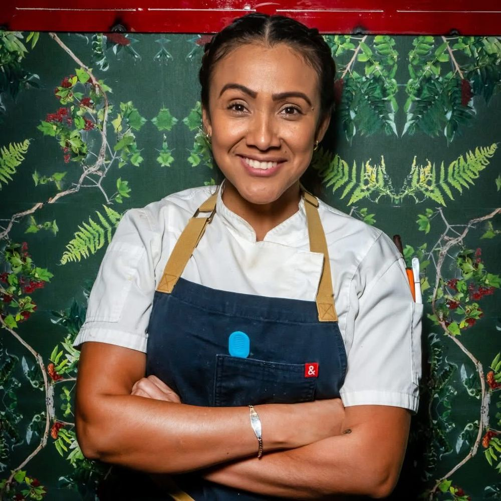

Chef & co-founder
Cesar Alonso Vargas
The Plaza Hotel · Metropolis
Now open weekends · 234 Starr St, Bushwick · Order on Uber Eats & DoorDash

Roots & Fire was born as a catering company, built by two chefs who came up in some of New York's most demanding kitchens. Today we cook for Brooklyn every weekend from Starr Street.
Quick links
How it started
Roots & Fire was born as a catering company, built by Chefs Cesar Alonso Vargas and Lady Diana Fajardo after years in some of New York's most demanding kitchens: The Plaza Hotel, Metropolis by Marcus Samuelsson and Five Acres at Rockefeller Center.
Roots is where we come from: the Peruvian and Latin flavors we grew up with. Fire is how we cook them: live flame, a screaming-hot wok and restaurant-level technique.
Today we cook for Brooklyn every weekend from our kitchen on Starr Street, and we still bring the full experience to weddings, parties and private events across NYC.

Chef & co-founder
The Plaza Hotel · Metropolis

Chef & co-founder
Five Acres · Metropolis
“Every dish we create tells a story.”
Cesar Alonso, co-founder
“Peru, Venezuela and New York on one table.”
Our catering, in one line
From a birthday at home to a 200-guest wedding: passed bites, party trays, live-fire stations and full-service dinners.